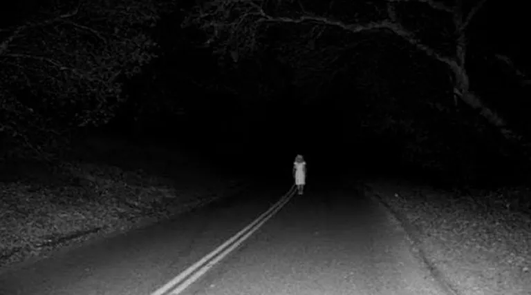

Artículos Recientes
Las aventuras de Bairoletto
Sus robos más famosos, su etapa anarquista y el intento por cambiar su vida.
La escalofriantes historias del Hotel Edén
El Hotel Edén, inaugurado a fines del siglo XIX, ha sido escenario de múltiples relatos de apariciones y fenómenos sobrenaturales a lo largo de los años.

El día que "La Llorona" caminó por la Plaza
La más conocida de las apariciones fantasmales tiene una desgarradora y triste historia situada en las entrañas de nuestra ciudad.
